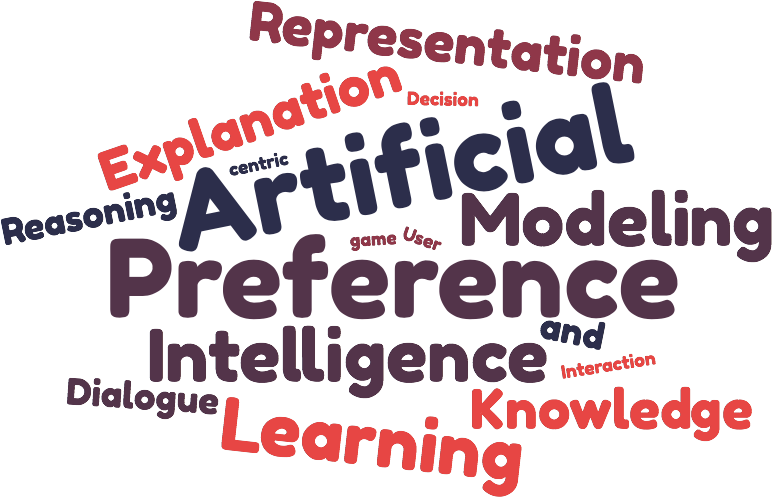

About me
Welcom to my Web site. I am a Professor of Computer Science at CentraleSupélec, Université Paris-Saclay, and a member of the MICS laboratory (Mathematics and Computer Science for Complexity and Systems), within the ARCADE team.
I received my PhD in Computer Science from Université Paris-Dauphine in 2009 and my Habilitation to Direct Research (HDR) from Université Paris-Saclay in 2022.
I am co-director of the Artificial Intelligence specialization of the CentraleSupélec engineering program.
My research lies at the intersection of knowledge representation and reasoning and machine learning. My current research focuses in particular on the interpretability and explainability of artificial intelligence algorithms, with a human-centered (human-in-the-loop) approach. I am interested in designing methods and frameworks that improve users’ understanding of, trust in, and engagement with AI systems.
Since 2022, I have also co-led the “Explainability and Trust” working group of the CNRS GDR RADIA. Since March 2026, I have held the ALTEN-CentraleSupélec Chair in “Trusted Multi-Agent Systems for Critical Industries,” dedicated to the development of explainable, robust, and sovereign AI for critical industrial environments.
A Complete CV in french can be downloaded [here] (update: 11/2024)
My research lies at the intersection of knowledge representation and reasoning and machine learning. My current research focuses in particular on the interpretability and explainability of artificial intelligence algorithms, with a human-centered (human-in-the-loop) approach. I am interested in designing methods and frameworks that improve users’ understanding of, trust in, and engagement with AI systems.
Since 2022, I have also co-led the “Explainability and Trust” working group of the CNRS GDR RADIA. Since March 2026, I have held the ALTEN-CentraleSupélec Chair in “Trusted Multi-Agent Systems for Critical Industries,” dedicated to the development of explainable, robust, and sovereign AI for critical industrial environments.
A Complete CV in french can be downloaded [here] (update: 11/2024)
Topics of Interests:
Explainable AI
Knowledge Representation and Reasoning
Decisin Aiding
Machine/Preference Learning

Contact
Wassila Ouerdane
CentraleSupelec-Batiment Bouygues
Laboratoire MICS
3, rue Joliot Curie
91190, Gif-Sur-Yvette
Tel: +33 1 75 31 66 78
E-Mail: wassila [dot] ouerdane [@]centralesupelec [dot] fr
Office room: --